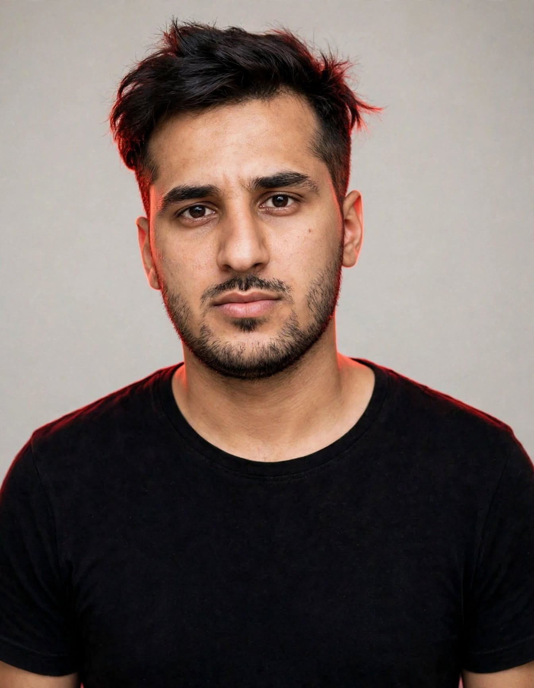

محمدحسین قنواتی
جانباخته اعتراضات آبان ۱۳۹۸

روزها، ساعتها، دقیقهها و ثانیههایی که از نبودن محمدحسین گذشت
۰روز
۰۰ساعت
۰۰دقیقه
۰۰ثانیه
بهبهان، خوزستان
در گزارشهای منتشرشده، سن او ۲۵ یا ۲۶ سال ذکر شده است. برخی گزارشهای حقوق بشری نوشتهاند که گلوله به ناحیه سینه، شکم و ران او اصابت کرده است. روایتهای موجود درباره جزئیات زندگی و لحظات پایانی او کامل نیست؛ اما نامش در میان جانباختگان آن روز ثبت شده است.
نامش را به یاد میسپاریم؛ برای آنکه هیچ انسانی در هیاهوی زمان فراموش نشود.
این صفحه با هدف ثبت یاد و نام او تهیه شده است. اگر اطلاعات مستند و قابل اتکای بیشتری در دسترس باشد، میتوان روایت را تکمیل کرد.
منابع برای تاریخ و اطلاعات ثبتشده:
بنیاد عبدالرحمن برومند
گزارش رادیو اروپای آزاد / رادیو آزادی
آموزشکده توانا
بنیاد عبدالرحمن برومند
گزارش رادیو اروپای آزاد / رادیو آزادی
آموزشکده توانا
خون جاری خوزستان
این صفحه بخشی از آرشیو یاد و نام جانباختگان قیام و مقاومت در خوزستان است. برای دیدن نامها و روایتهای دیگر، به صفحه اینستاگرام پروژه سر بزنید.
مشاهده صفحه خون جاری خوزستان در اینستاگرام ←